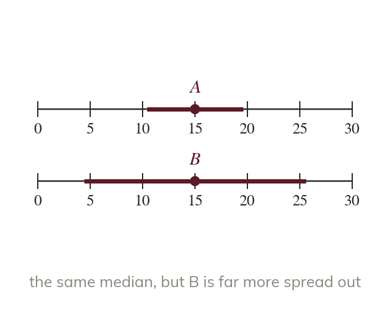
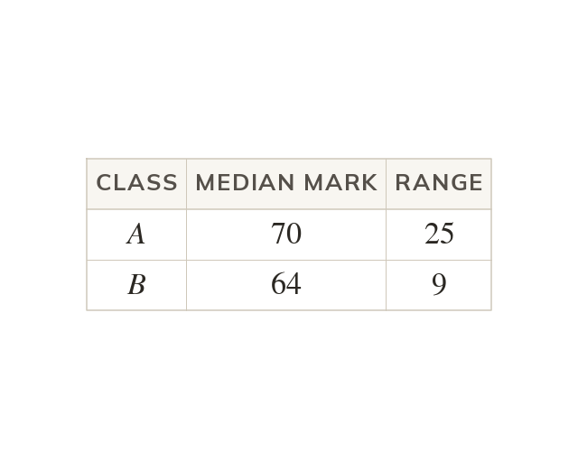
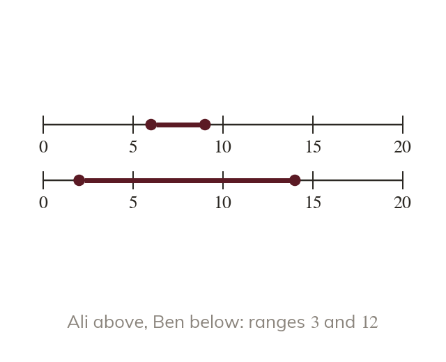
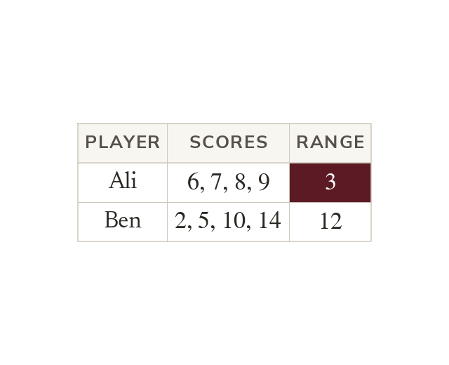

Which class did better, which bus is more reliable, which player is more consistent? Today we answer questions like these with an average and the range.
By the end you’ll know…
Two data sets are compared on two things: an average, which locates the data, and the range, which measures how spread out they are.
A comparison is only meaningful when the same average is used for both.
A conclusion is stated in the context of the data, saying what the difference means and not only that one figure is larger.
By the end you can
G4Compare two data sets using an average and the range, and state a conclusion in context.
G5Decide which of two data sets is more consistent, and support the answer with a calculated measure of spread.
Work down the page at your own pace. Write every answer in your book first, then click to check it.
01
Do Now
About 5 minutes
1
Class A's median mark is and class B's is Which class did better on average?
Class A
2
Find the median and range of and
Median range
Remember these?
LAST LESSONFour classes have frequencies and Which class contains the median?
so the 10.5th; running totals : the third class
LAST WEEKClasses and have frequencies and Estimate the mean.
LAST TERMWrite in standard form.
LAST YEARA pen costs and a pad costs Find the total cost.
02
Learn
Read each card, then follow the worked examples one step at a time.

Two things to compare
Compare two data sets on an average and on the range. The average says where the data sit. The range says how spread out they are.
Two data sets are compared on an average, which says where the data sit, and on the range, which says how spread out they are. Both comparisons are needed.

Like with like, in context
A median is compared with a median, or a mean with a mean. Then the conclusion says what the difference means for the people or things measured.
WORKED EXAMPLE A
Compare the marks of class A, median and range with class B, median and range
AverageA's median is higher, so A did better on average
SpreadB's range is smaller, so B's marks were more consistent
WORKED EXAMPLE B
Compare the bus, mean minutes and range with the train, mean minutes and range
Averagethe train is quicker on average
Spreadthe bus is more consistent
YOUR TURN · a
Team A scores a mean of goals with range and team B a mean of goals with range Compare the teams.
A scores more on average; B is more consistent
YOUR TURN · b
Boys have median height cm and range cm; girls have median cm and range cm. Compare them.
The girls were taller on average and less spread out
03
Check your understanding
Pick an answer. If it's wrong, the feedback tells you which mistake it was.
Which two things are compared between two data sets?
Yes. Compare an average, and a spread such as the range.
Not quite. You need a spread as well, such as the range.
Not quite. Compare the same average for both sets, and a spread.
Not quite. Single values can mislead. Compare an average and the range.
Shop A: median wait minutes, range Shop B: median wait minutes, range Which is correct?
Not quite. A larger range means less consistent.
Not quite. Say what it means: B's waits are longer on average.
Yes. A's median is lower, and B's range is smaller.
Not quite. A has the shorter median wait, but B has the smaller range.
Class A has a mean of and class B a median of What is wrong with comparing and ?
Not quite. You can't compare a mean with a median.
Yes. Compare the same average for both classes.
Not quite. The averages can be compared, if they're the same kind.
Not quite. Comparing a mean with a median doesn't work.
04
Practise
mark as you go
Checkpoint. Year scored a mean of with range and Year a mean of with range Compare the two years, saying what each difference means.Show your teacher before you go on
1
Class A has median mark and range Class B has median and range Compare the two classes.
B did better on average (higher median) A's marks were more consistent (smaller range)
2
At shop X the mean wait is minutes with range At shop Y it is minutes with range Compare the shops.
Y is quicker on average X is more consistent: its waits vary less
3
Town P has mean monthly rainfall mm with range mm. Town Q has mean mm with range mm. Compare the towns.
Q is wetter on average The spread is the same: both ranges are mm
4
Team A scored goals; team B scored Compare them using the mean and the range.
A: mean range ; B: mean range Same average; B is more consistent
5
Why should you not compare class A's median with class B's mean?
A fair comparison uses the same average for both
EXT
Sam says, "Class A's range is bigger, so class A did better." Explain what is wrong.
The range measures spread, not how well A bigger range means less consistent marks; compare an average to judge "better"
05
Learn
Read each card, then follow the worked examples one step at a time.

Consistent means less spread
A data set is more consistent when its values are closer together. The smaller range shows the more consistent set.

Calculate before deciding
Consistency is decided from a measure of spread calculated for both sets. A glance at the largest value is not enough.
WORKED EXAMPLE C
Which player is more consistent: Ali scores and or Ben scores and ?
Find Ali's range
Find Ben's range
More consistentAli, as his range is smaller
WORKED EXAMPLE D
Which machine is more consistent: A fills bags of and grams, or B fills and ?
Find A's range
Find B's range
More consistentmachine A, as its range is smaller
YOUR TURN · c
Runner A's times, in seconds, are and and runner B's are and Who is more consistent?
A: range against
YOUR TURN · d
One baker's loaves weigh from to grams and another's from to grams. Which baker is more consistent?
The first: range against
06
Check your understanding
Pick an answer. If it's wrong, the feedback tells you which mistake it was.
Set A has range and set B has range Which is more consistent?
Not quite. A larger range means less consistent.
Yes. A smaller range means more consistent: is less than
Not quite. Consistency is about spread, so the range is enough.
Not quite. A bigger range means more spread out, so less consistent.
Which is more consistent: or ?
Not quite. Look at the spread, not just the biggest value.
Not quite. A range of is more spread out, so less consistent.
Not quite. A mean doesn't show spread. Look at the range: against
Yes. Range against The first is more consistent.
Bus A has a mean of minutes and range ; bus B a mean of minutes and range Which is correct?
Not quite. The means match, but A's range is much smaller.
Yes. Same mean, and A's smaller range means it's more reliable.
Not quite. A larger range means less reliable.
Not quite. The means are both so neither is quicker on average.
07
Practise
mark as you go
Checkpoint. Machine A fills bags with range grams and machine B with range grams, and both have the same median. Which machine is more consistent? Explain.Show your teacher before you go on
1
Archer A scores Archer B scores Who is more consistent?
A: range ; B: range A is more consistent
2
Machine P fills bottles with and ml. Machine Q fills and ml. Which is more consistent?
P: range ; Q: range P is more consistent
3
Journey X takes minutes; journey Y takes Compare them using the mean and the range.
X: mean range ; Y: mean range X is slightly quicker and far more consistent
4
Bakery A's loaves weigh from g to g; bakery B's from g to g. Which is more consistent?
A: g; B: g A is more consistent
5
Two runners have the same mean time. A's range is s and B's is s. Which runner gives the more reliable time? Explain.
A: the smaller range means A's times vary less
EXT
Ana's scores are ; Ben's are Find each range. Is Ana really less consistent? Explain.
Ana: ; Ben: One extreme score makes Ana's range large; her other scores vary by only
08
Exit ticket
On paper, on your own, then check
1
Which two measures are used to compare two data sets?
An average and the range.
2
Team A has mean and range ; team B has mean and range Compare the teams.
A scored more on average; B was more consistent.
3
Which is more consistent: or ?
The first: range against
Finished? Next lesson: 10.19.1 Naming Sides and Choosing a Ratio.
Practise more
After the lesson, or whenever you want more
Dr Frost
Log in, then search for a code to practise that skill.
207hCompare two sets of data using median and range.